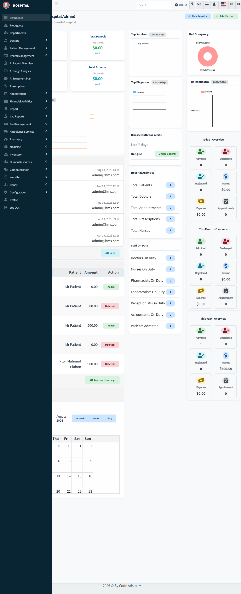
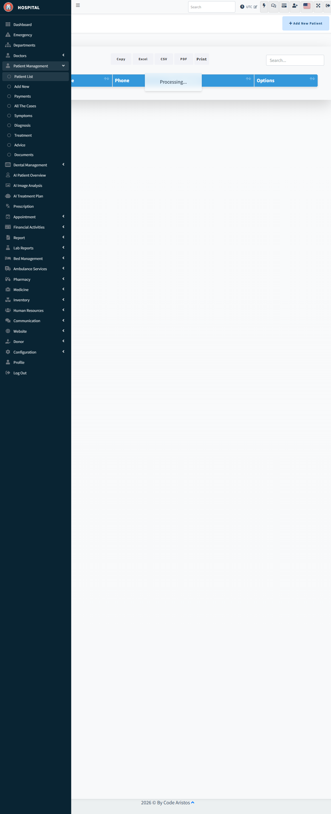
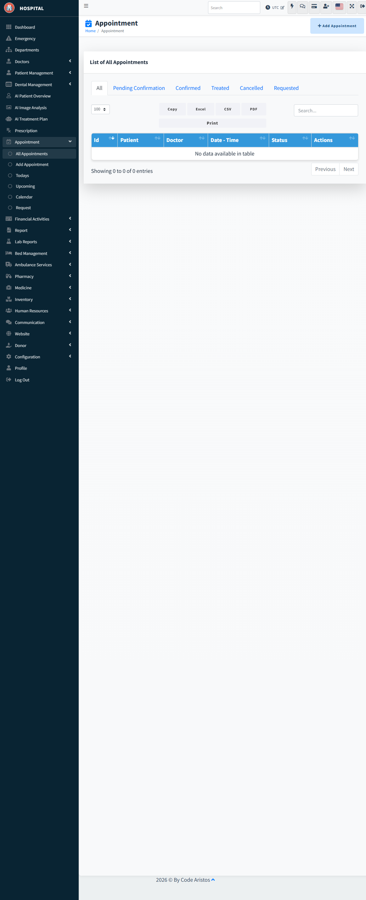

Project Workflow Guide
This page presents the full project flow in a presentation-friendly way, starting from login and ending with the completed hospital workflow.
The local project is running at the URL below. This preview gives you a real screenshot-style view of the app while you present the workflow.
Open the live app


The full project story is: login as admin, create hospital, configure settings, add departments and doctors, register patients, create appointments, manage clinical cases, and finish with pharmacy, billing, reports, and optional AI features.